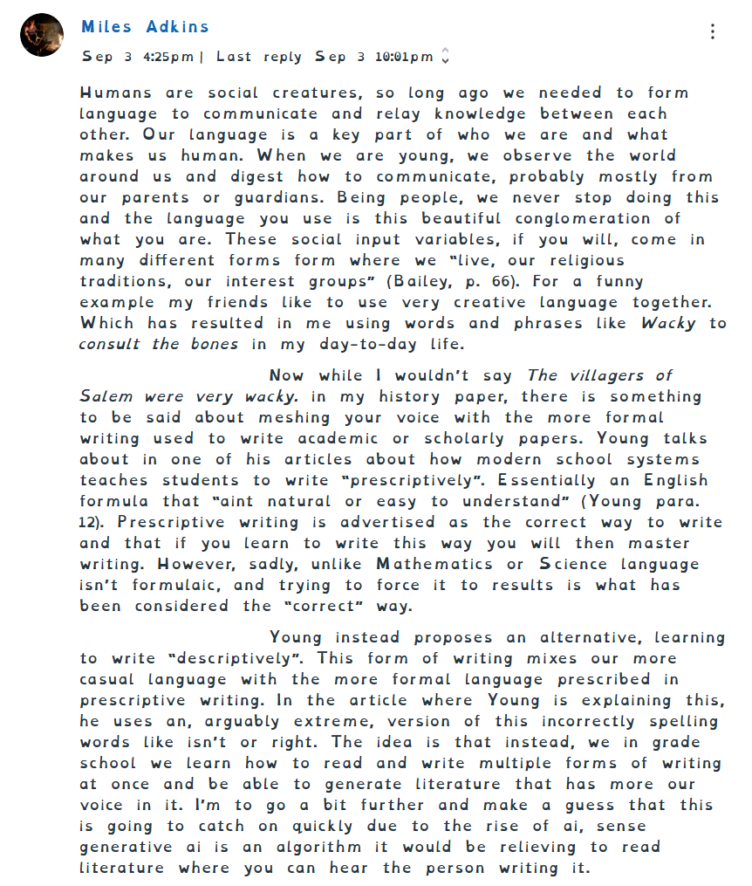

Sept 3rd: This was this weeks Journal entry, This one was on Young and Bailey, and we I chose to talk mostly about how language is acquired, and the difference between writing "perscriptively" and "descriptively". I say how we at a young age learn to speak but are always learning and adapting how we use language, which is why writing is "descriptive" rather than "perscriptive". I felt this worked on this page sense it is talking about the writing prossess and how we should adapt our writing based on the situation.
